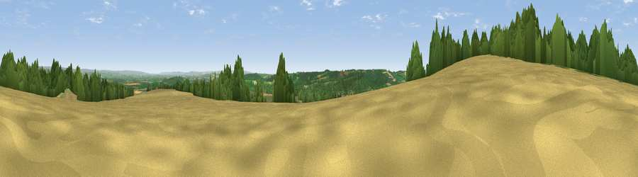

Viewpoint near Oswaldkirk
#8220 in England · top 18% of its area beats it · near OswaldkirkThe view, rendered

A 360° render of this exact spot computed from the terrain model, tree cover and land cover — summer colours, afternoon light, calibrated against photographs of famous viewpoints. Real trees, hedges and buildings will differ in detail.
The panorama
Grey silhouette: terrain skyline in each direction (720 bearings, Earth curvature and refraction included). Dashed green: skyline with trees (+15 m) and buildings (+8 m) as obstacles. Blue strip: how far the ground is visible on each bearing.
Where the view opens
Wedge length = distance to the farthest visible ground on that bearing (vegetation-aware). Rings at 10, 25 and 50 km.
What fills the view
39% grassland · 34% cropland · 25% woodland · 1% built-up
Angular shares of the visible panorama (visual magnitude), not map area. Landscape diversity 0.49 (0–1 Shannon).
Key numbers
More beautiful places nearby
The staircase of upgrades: each row has a higher view potential than everything closer. Driving times are estimates from straight-line distance, calibrated against real road routing — check an actual route before setting out.
| Place | Direction | Drive | Score |
|---|---|---|---|
| Viewpoint near Ampleforth | W · 1 km | ~3 min | 76.6 |
| Viewpoint near Kilburn | WNW · 10 km | ~19 min | 79.3 |
| Hood Hill | WNW · 11 km | ~20 min | 79.6 |
| Viewpoint near Thirlby | WNW · 11 km | ~21 min | 81.5 |
| White Hill | N · 25 km | ~40 min | 84.2 |
| Viewpoint near Great Broughton | N · 25 km | ~40 min | 84.4 |
| Carlton Bank | NNW · 25 km | ~41 min | 85.1 |
| Roseberry Topping | N · 34 km | ~51 min | 85.8 |
54.20495, -1.06900 · source: screening · position refined by local search. Computed location — check access rights before visiting.